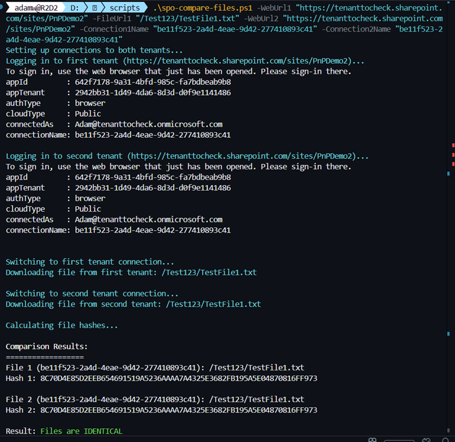

Get and compare documents hash from different tenants
Summary
This script compares files from two different SharePoint tenants by calculating and comparing their hash values. This is useful for verifying file integrity after migrations or ensuring files are identical across tenants. This sample is available in both PnP PowerShell and CLI for Microsoft 365.
Example of script output of the CLI for Microsoft 365 version:

# Connect to the first tenant
$Connection1 = Connect-PnPOnline -Url "https://[TenantName1].sharepoint.com/sites/[siteName1]" -Interactive -ReturnConnection
$file1 = Get-PnPFile -Url "/Shared%20Documents/document.docx" -AsMemoryStream -Connection $Connection1
# Connect to the first tenant
$Connection2 = Connect-PnPOnline -Url "https://[TenantName2].sharepoint.com/sites/[siteName2]" -Interactive -ReturnConnection
$file2 = Get-PnPFile -Url "/Shared%20Documents/document.docx" -AsMemoryStream -Connection $Connection2
# Compare the hash of the two files
$hash1 = $(Get-FileHash -InputStream $file1).Hash
$hash2 = $(Get-FileHash -InputStream $file2).Hash
# Output the results of the comparison
if ($hash1 -eq $hash2) {
Write-Host "The two files have the same hash."
} else {
Write-Host "The two files have different hashes."
}
[CmdletBinding()]
param(
[Parameter(Mandatory, HelpMessage = "URL of the site in first tenant")]
[string]$WebUrl1,
[Parameter(Mandatory, HelpMessage = "Server-relative URL of the file in first tenant")]
[string]$FileUrl1,
[Parameter(Mandatory, HelpMessage = "URL of the site in second tenant")]
[string]$WebUrl2,
[Parameter(HelpMessage = "Server-relative URL of the file in second tenant (defaults to same as FileUrl1)")]
[string]$FileUrl2,
[Parameter(HelpMessage = "Name for the first tenant connection (defaults to 'tenant1')")]
[string]$Connection1Name = "tenant1",
[Parameter(HelpMessage = "Name for the second tenant connection (defaults to 'tenant2')")]
[string]$Connection2Name = "tenant2"
)
begin {
if ([string]::IsNullOrEmpty($FileUrl2)) {
$FileUrl2 = $FileUrl1
}
Write-Host "Setting up connections to both tenants..." -ForegroundColor Cyan
Write-Host "Logging in to first tenant ($WebUrl1)..." -ForegroundColor Cyan
m365 login --connectionName $Connection1Name
if ($LASTEXITCODE -ne 0) {
throw "Failed to login to first tenant"
}
Write-Host "Logging in to second tenant ($WebUrl2)..." -ForegroundColor Cyan
m365 login --connectionName $Connection2Name
if ($LASTEXITCODE -ne 0) {
throw "Failed to login to second tenant"
}
$tempDir = Join-Path $env:TEMP "CompareFiles-$(Get-Date -Format 'yyyyMMddHHmmss')"
New-Item -ItemType Directory -Path $tempDir -Force | Out-Null
$tempFile1 = Join-Path $tempDir "file1.tmp"
$tempFile2 = Join-Path $tempDir "file2.tmp"
}
process {
try {
Write-Host "`nSwitching to first tenant connection..." -ForegroundColor Cyan
m365 connection use --name $Connection1Name | Out-Null
if ($LASTEXITCODE -ne 0) {
throw "Failed to switch to first tenant connection"
}
Write-Host "Downloading file from first tenant: $FileUrl1" -ForegroundColor Cyan
$result1 = m365 spo file get --webUrl $WebUrl1 --url $FileUrl1 --asFile --path $tempFile1 2>&1
if ($LASTEXITCODE -ne 0) {
throw "Failed to download file from first tenant: $result1"
}
Write-Host "`nSwitching to second tenant connection..." -ForegroundColor Cyan
m365 connection use --name $Connection2Name | Out-Null
if ($LASTEXITCODE -ne 0) {
throw "Failed to switch to second tenant connection"
}
Write-Host "Downloading file from second tenant: $FileUrl2" -ForegroundColor Cyan
$result2 = m365 spo file get --webUrl $WebUrl2 --url $FileUrl2 --asFile --path $tempFile2 2>&1
if ($LASTEXITCODE -ne 0) {
throw "Failed to download file from second tenant: $result2"
}
Write-Host "`nCalculating file hashes..." -ForegroundColor Cyan
$hash1 = (Get-FileHash -Path $tempFile1 -Algorithm SHA256).Hash
$hash2 = (Get-FileHash -Path $tempFile2 -Algorithm SHA256).Hash
Write-Host "`nComparison Results:" -ForegroundColor White
Write-Host "==================" -ForegroundColor White
Write-Host "File 1 ($Connection1Name): $FileUrl1" -ForegroundColor Gray
Write-Host "Hash 1: $hash1" -ForegroundColor Gray
Write-Host "`nFile 2 ($Connection2Name): $FileUrl2" -ForegroundColor Gray
Write-Host "Hash 2: $hash2" -ForegroundColor Gray
Write-Host "`nResult: " -NoNewline
if ($hash1 -eq $hash2) {
Write-Host "Files are IDENTICAL" -ForegroundColor Green
} else {
Write-Host "Files are DIFFERENT" -ForegroundColor Red
}
} finally {
if (Test-Path $tempDir) {
Remove-Item -Path $tempDir -Recurse -Force
}
}
}
# Example 1: Compare same file across two tenants
# .\Compare-Files.ps1 -WebUrl1 "https://contoso.sharepoint.com/sites/Site1" -FileUrl1 "/Shared Documents/document.docx" -WebUrl2 "https://fabrikam.sharepoint.com/sites/Site2" -Connection1Name "contoso" -Connection2Name "fabrikam"
# Example 2: Compare different file paths
# .\Compare-Files.ps1 -WebUrl1 "https://contoso.sharepoint.com/sites/Site1" -FileUrl1 "/Shared Documents/doc1.pdf" -WebUrl2 "https://fabrikam.sharepoint.com/sites/Site2" -FileUrl2 "/Documents/doc2.pdf"
# Example 3: Compare with default connection names (tenant1, tenant2)
# .\Compare-Files.ps1 -WebUrl1 "https://contoso.sharepoint.com/sites/Site1" -FileUrl1 "/Shared Documents/report.xlsx" -WebUrl2 "https://fabrikam.sharepoint.com/sites/Site2"
Contributors
Disclaimer
THESE SAMPLES ARE PROVIDED AS IS WITHOUT WARRANTY OF ANY KIND, EITHER EXPRESS OR IMPLIED, INCLUDING ANY IMPLIED WARRANTIES OF FITNESS FOR A PARTICULAR PURPOSE, MERCHANTABILITY, OR NON-INFRINGEMENT.